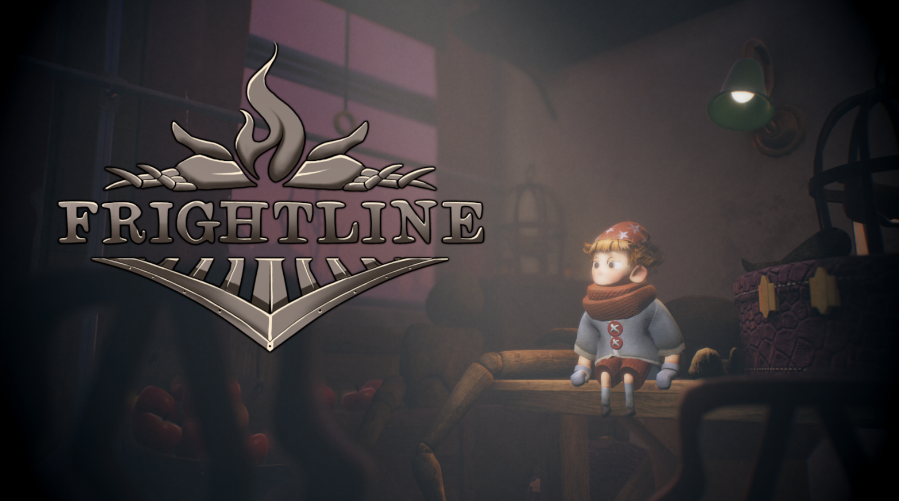
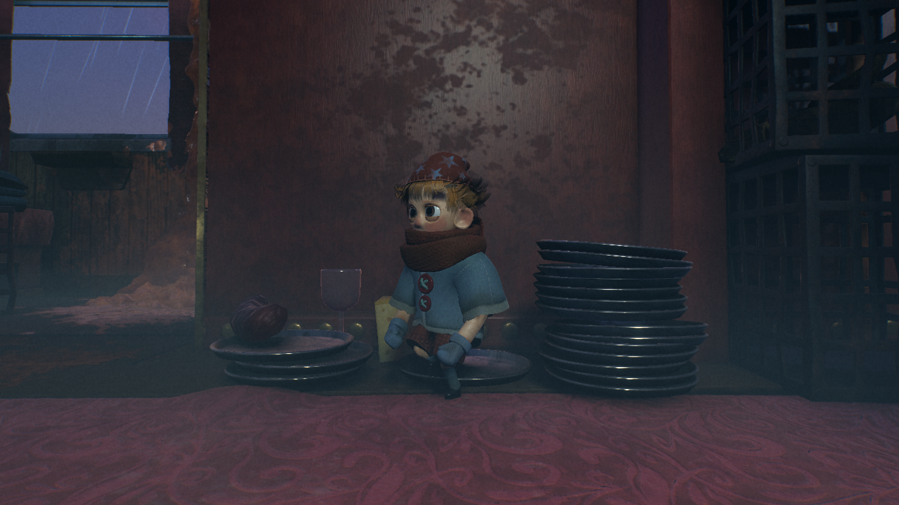

Frightline was our third game project at PlaygroundSquad. Frightline is an atmospheric horror, puzzle, adventure experience where you explore a seemingly endless train. To progress forward you have to utilize both your physical doll form, but also a spirit form. Along the way, having to hide and run from the train conductor that tries to halt your journey.
The fact that we wanted to have two main "player states", a physical doll and a spirit, lead to some interesting problems and solutions.
Not wanting to limit any design decisions, yet still wanting to have as little repeat code as possible, making generic scripts was an obvious solution.
The best example of this is how I made the movement.
It's made up of 3 scripts, CommonMovement, PlayerMovement, and SpiritMovement.
Where common handles the things both player and spirit should be able to do, like inputs, basic movement, animation states, etc.
Player- and SpiritMovement then inherit CommonMovement, adding their own spin on things on top of the base.
On top of this, theres a more abstract third state the player can be in, possession.
The spirit has the ability to "possess" certain objects in the world, allowing it to control them in different ways.
A few examples being, boxes that are moveable to access new areas, or levers that can be pulled to open doors.
Another big part of the controller is the Player singleton class.
It handles the physical and spirit references and the switching between them.
The structure for this was set up by me, and then added upon by others in the team.
The interaction in this game works by having a sphere trigger that detects objects with the BaseInteractable script and its derived classes. These interactables have two functions, TryInteractPlayer and TryInteractSpirit. These functions can then be overridden with the behaviour needed. Some examples of this are: picking up collectables, and the spirit possessing objects.
On top of the main ideas for the player and interacting, I also had a lot to do with the audio integration using FMOD.
This work includes making systems for dynamic player audio and music.
The music works by having two audio tracks, one for the current music and the other for the next music.
When a track is playing and you queue another, it fades out the first track and fades in the other, in order to give the player a more seamless experience.
The dynamic player audio is a bit more involved.
I made scriptable objects for SoundCollections that have references to FMOD events for footsteps, jumping, landing and crawling sounds.
These different collections are then selected by a raycast from the player to check what surface it is currently standing on, to help with player immersion.
Additionally, I also made a lot of contributions in the FMOD studio project too.
Mixing some of the audio, setting up snapshots and VCAs, and helping with paramaters.
The results we got with the animation controller is something I'm proud of.
It obviously includes the necessary animations for idling, moving, jumping, etc.
Where it really shines is all of the smaller details with it.
Some examples are, setting up animation events to play footstep sounds when the feet actually touch the ground;
making the player shiver after idling for a while, and sitting down to sleep if they're idle even longer;
and adding vfx for the player's breath when shivering, and Zs when he's sleeping.
Furthermore, to make the player feel even more alive, I decided to and add inverse kinematics to his arms and legs, and targeting for his head.
The targeting for his head just makes him look towards points of interests that are marked with game objects.
The inverse kinematics for his arms are to make his arms sway when hes balancing on narrower surfaces, like planks.
And the inverse kinematics for his legs are to plant his feet on the surfaces of the environment.

In addition to the larger systems I've already mentioned, I also contributed with lots of smaller things here and there when necessary. Such as, making smaller tools for designers, making the interaction UI, bug fixing, and connecting together others' code with my own.